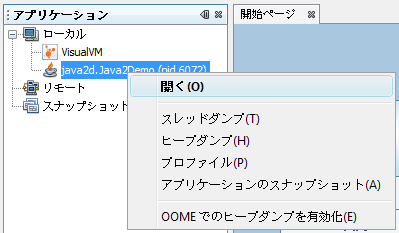
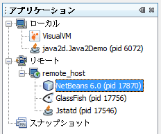

VisualVM は、Java 仮想マシン (JVM) で実行中の Java アプリケーションに関する詳細情報を提供します。VisualVM のグラフィカルユーザーインタフェースを使用すると、複数の Java アプリケーションに関する情報をすばやく簡単に表示できます。
この入門ガイドは、VisualVM をすばやく設定して実行するための支援を行います。このガイドでは、VisualVM をインストールする方法と、VisualVM のアップデートセンターからプラグインをインストールして、ツールに機能を追加する方法を説明します。また、VisualVM の起動方法と、ローカルおよびリモートの JVM で実行中のアプリケーションに関して取得できるいくつかの情報の表示方法を示します。
java.sun.com で紹介された短いスクリーンキャストで、VisualVM の機能を参照してください。
アプリケーションを起動すると、VisualVM のメインウィンドウが開きます。デフォルトで、メインウィンドウの左パネルに、「アプリケーション」ウィンドウが表示されます。「アプリケーション」ウィンドウでは、ローカルおよびリモートの JVM で実行中の Java アプリケーションをすばやく確認できます。
「アプリケーション」ウィンドウは、特定のアプリケーションの詳細を表示するための、主な入場点です。アプリケーションのノードを右クリックすると、ポップアップメニューが開きます。ここで、主アプリケーションのタブを開くか、スレッドダンプまたはヒープダンプを取得するかを選択できます。
「アプリケーション」ウィンドウを使用して、アプリケーションに関するデータを表示および保存する方法の詳細については、次のページを参照してください。
VisualVM には、ヒープダンプを簡単に参照できる表示機能があります。既存のヒープダンプを読み込んだり、ローカルで実行中のアプリケーションのヒープのスナップショットを作成したりできます。
ローカルアプリケーションのヒープダンプを取得するには、次のいずれかを実行します。
保存したヒープダンプを開くには、メインメニューから「ファイル」>「読み込み」を選択し、保存したヒープダンプを探します。
開いたヒープダンプを参照するには、次の手順に従います。
ヒープダンプを取得すると、VisualVM は新しいタブでヒープダンプを開き、「アプリケーション」ウィンドウのアプリケーションのノードの下にヒープダンプ用のノードを作成します。生成したヒープダンプを保存するには、ヒープダンプのノードを右クリックし、「別名保存」を選択します。生成したヒープダンプを明示的に保存しない場合、アプリケーションが閉じるときに、ダンプは削除されます。
詳細については、次のドキュメントを参照してください。
VisualVM には、ローカルの JVM で実行中のアプリケーションをプロファイルできるプロファイラが含まれています。アプリケーションのタブの「プロファイラ」タブで、プロファイルの制御にアクセスします。プロファイラでは、ローカルアプリケーションのメモリー使用量と CPU パフォーマンスを解析できます。
注: JDK 6 で実行中のアプリケーションをプロファイルするには、アプリケーションのクラス共有を無効にする必要があります。そうしないと、アプリケーションがクラッシュする可能性があります。クラス共有を無効にするには、-Xshare:off 引数を付けてアプリケーションを起動します。
プロファイルタスクを選択すると、VisualVM は「プロファイラ」タブにプロファイルデータを表示します。
VisualVM を使用したプロファイルの詳細については、次のドキュメントを参照してください。
VisualVM では、リモートホストで実行中のアプリケーションを簡単に監視でき、またリモートシステムに関する一般的なデータを表示できます。リモートホストのアプリケーションに関する情報を表示するには、まずリモートホストに接続します。「アプリケーション」ウィンドウの「リモート」ノードの下に、接続しているリモートホストが一覧表示されます。リモートホストのノードを展開し、リモートホストで実行中のアプリケーションを表示します。
リモートアプリケーションからデータを取得するには、リモートの JVM で jstatd ユーティリティーが実行されている必要があります。jstatd を起動する方法については、「jstatd - 仮想マシン jstat デーモン」 を参照してください。リモートホストで実行中のアプリケーションはプロファイルできません。
「了解」をクリックすると、「リモート」ノードの下にリモートホストのノードが表示されます。リモートホストのノードを展開し、リモートホストで実行中の Java アプリケーションを表示します。
リモートアプリケーションの名前をダブルクリックすると、VisualVM でそのアプリケーションのタブを開くことができます。
詳細については、次のドキュメントを参照してください。
VisualVM アップデートセンターから入手できるプラグインをインストールして、VisualVM に機能を追加できます。たとえば、VisualVM-MBeans プラグインをインストールすると、アプリケーションのタブに「MBeans」タブが追加されます。これを使用すると、VisualVM 内部から MBeans を監視および管理できます。
VisualVM プラグインをインストールするには、次の手順に従います。
VisualVM-MBeans プラグインが選択されているプラグインマネージャーのスクリーンショットです。
このドキュメントでは、VisualVM の一部の機能を紹介しています。VisualVM は、直感的なビジュアルインタフェースとして設計されており、ローカルおよびリモートの JVM で実行中の Java アプリケーションに関する情報を簡単に調査できます。VisualVM の機能の操作の詳細については、次のドキュメントを参照してください。